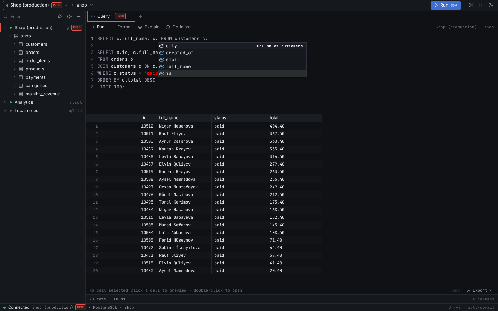
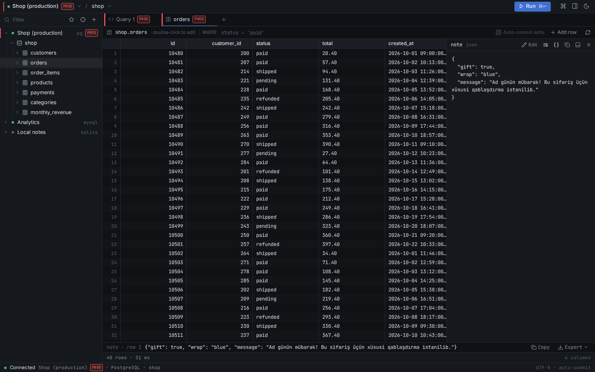
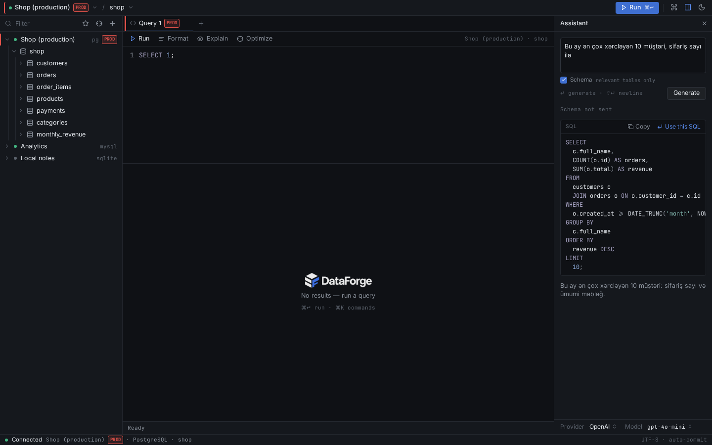
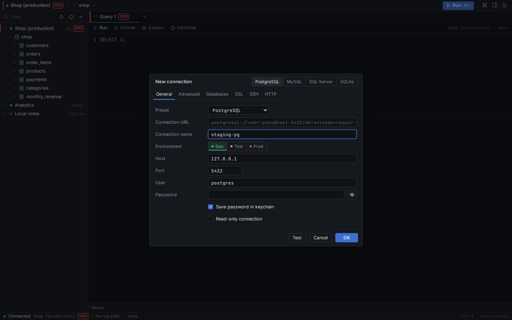

AI → SQL in your language
Describe what you need in plain English or Azerbaijani and get a ready-to-run query.
Free & open source (MIT)
6 MB. Opens instantly. MySQL, PostgreSQL, SQLite, SQL Server.
Windows · macOS · Linux
Download
One small installer. No Node, Rust, or runtime required.
Features
Small app, serious toolset. Built for speed and everyday database work.
Describe what you need in plain English or Azerbaijani and get a ready-to-run query.
Turn errors into working SQL, understand complex queries, and optimize with the real EXPLAIN plan.
Keywords, tables, columns, aliases, and shortcuts for the queries you write every day.
Click column headers to filter (=, contains, NULL, in list…) and sort, then keep working.
Queue cell edits and row changes, then Save (Ctrl/Cmd+S) or Discard — all in one transaction.
Dev/test/prod labels, typed confirmation before writes, and optional read-only mode.
Connect to MySQL and PostgreSQL through an SSH tunnel with a password or private key.
CSV, JSON, SQL, and Excel — with streaming, progress, and cancel for large tables.
Screenshots
The editor, data grid, AI actions, and connection manager.




Comparison
A lightweight alternative to the big database IDEs. Figures are approximate.
| Feature | DataForge | DBeaver | Navicat |
|---|---|---|---|
| Installer size | ~6 MB | ~100+ MB (Java) | Large |
| Startup | Instant | Slower (Java) | Fast |
| Price | Free (MIT) | Free Community; paid editions | Paid |
| AI built in | Yes (bring your own key) | No (via extensions) | Varies by version |
| Native look | Yes (Tauri) | No (Java/SWT) | Yes (native UI) |
DBeaver and Navicat are trademarks of their respective owners. Details reflect their public editions and may change.
What's new
Pulled from the project changelog on GitHub.
Loading the latest changes…
FAQ
Yes. It is open source under the MIT license — free to use, modify, and distribute.
Database passwords and AI API keys are stored in your operating system's keychain, not in plain text in the app. Connection files do not contain passwords.
OpenAI, OpenRouter, Google Gemini, Groq, and local models through Ollama or LM Studio. You bring your own key.
Only the schema and SQL you send with a request. Requests go directly from your machine to the provider you configure; DataForge does not run a proxy server.